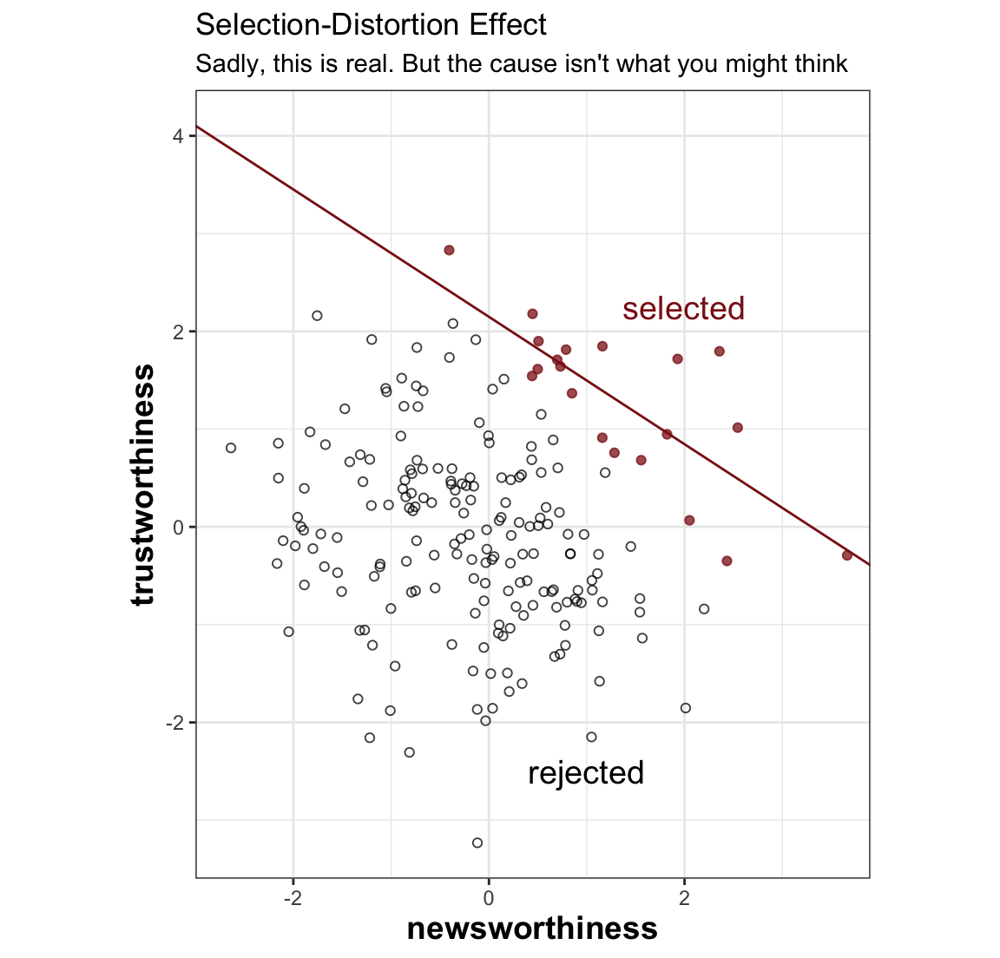
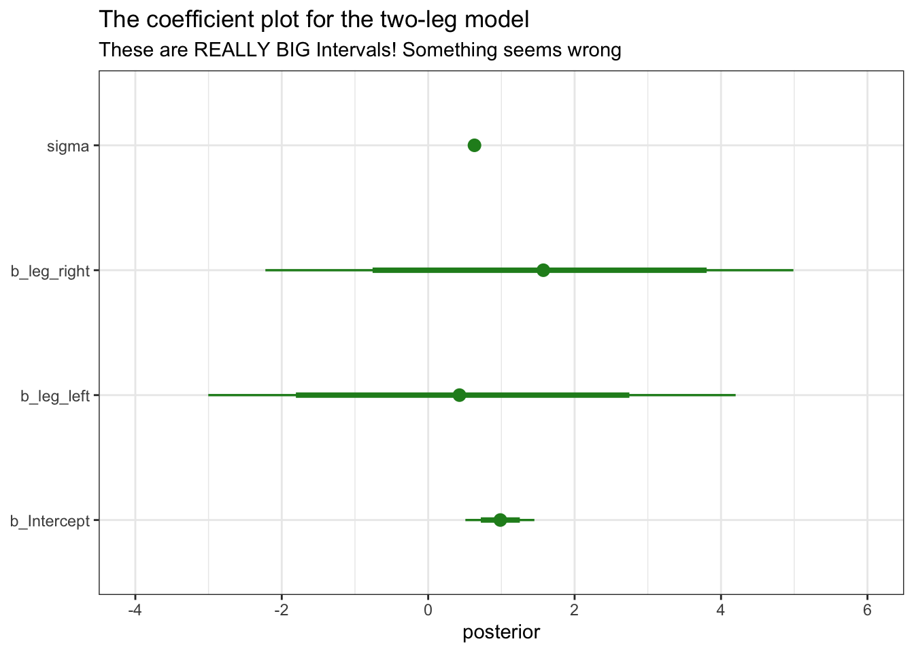
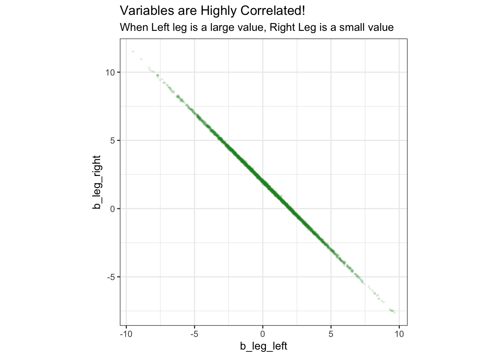
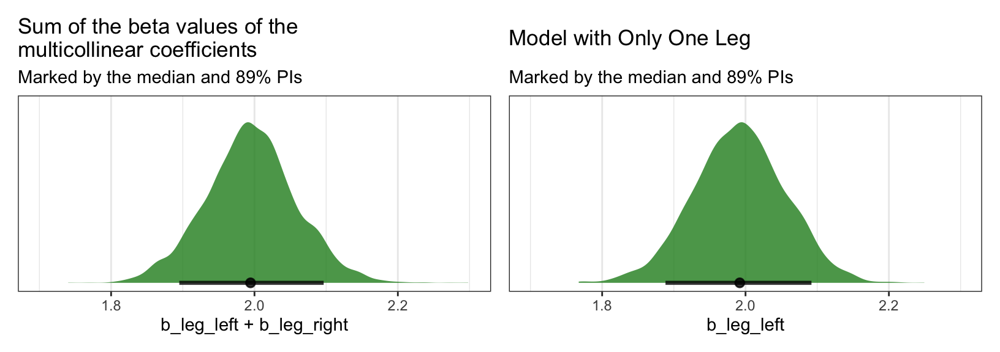

Multicollinearity
Multicollinearity is important, so let’s talk about it real quick
Selection Bias
Plot Selection bias

Multicollinearity: Simulated Example
d %>% head()# A tibble: 6 × 4
height leg_prop leg_left leg_right
<dbl> <dbl> <dbl> <dbl>
1 5.93 0.454 2.68 2.71
2 6.51 0.412 2.68 2.68
3 9.35 0.422 3.93 3.98
4 9.23 0.431 3.96 3.99
5 10.4 0.429 4.43 4.42
6 10.1 0.494 4.96 4.97What happens when we use these two highly correlated variables in our analysis?
\begin{align*} \text{Height}_i & \sim \operatorname{Normal}(\mu_i, \sigma) \\ \mu_i & = \alpha + \beta_1 \text{Left-Leg}_i + \beta_2 \text{Right-Leg}_i. \end{align*}
Why does this happen?

However, if we simply sum the beta values together?
This is weird - What happens in a model with just one leg?
#patchwork plotting
p1 + p2
The basic lesson is only this: When two predictor variables are very strongly correlated (conditional on other variables in the model), including both in a model may lead to confusion. The posterior distribution isn’t wrong, in such cases. It’s telling you that the question you asked cannot be answered with these data. And that’s a great thing for a model to say, that it cannot answer your question. And if you are just interested in prediction, you’ll find that this leg model makes fine predictions. It just doesn’t make any claims about which leg is more important. (p. 166)